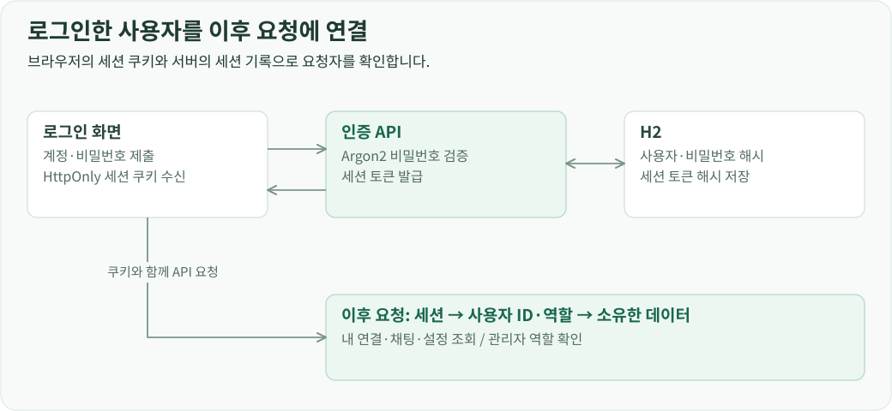
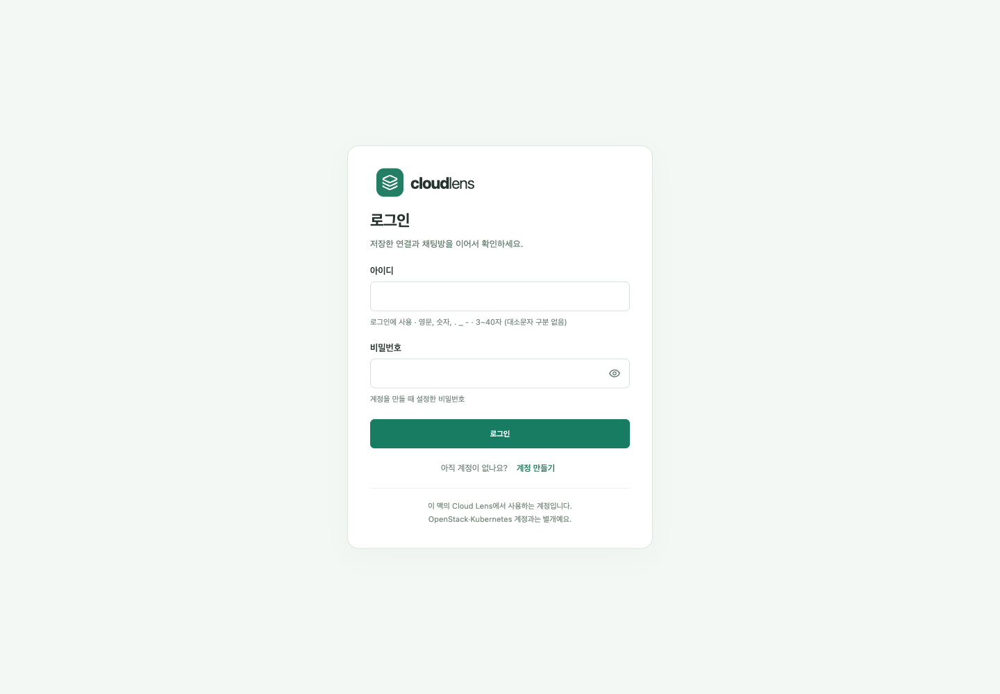
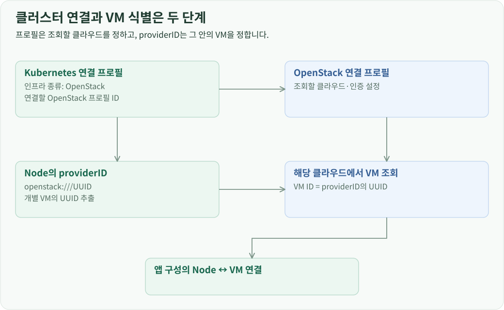

개요
포털 계정은 연결·채팅·설정의 소유자를 정하고, 연결 프로필은 접근할 인프라와 인증정보를 정합니다. 요청은 로그인 세션 확인, 프로필 소유권 확인, 원격 API 호출 순서로 처리합니다.
로그인과 세션 수명
앱을 열면 프론트엔드는 /api/auth/me로 현재 세션을 확인합니다. 세션이 있으면 사용자 소유의 연결·설정·채팅을 불러오고, 세션이 없으면 로그인 화면을 표시합니다.
회원가입 시 비밀번호를 Argon2로 해시해 저장합니다. 로그인에서는 저장된 해시로 비밀번호를 검증하고 세션을 발급합니다. 브라우저에는 HttpOnly 쿠키로 세션 토큰을 전달하며, 서버에는 토큰의 해시를 보관합니다. 이후 API 요청은 쿠키의 토큰을 검증해 사용자 ID와 역할을 결정합니다.

로그아웃하면 서버의 세션을 폐기합니다. 첫 사용자는 포털 관리자로 등록하며, 관리자 API는 세션의 역할을 확인한 뒤 전체 채팅과 실행 기록 조회를 허용합니다.

연결 설정을 사용자 소유 프로필로 저장
Kubernetes는 kubeconfig, OpenStack은 clouds.yaml에서 연결 정보를 읽습니다. 설정 파일에 환경이 여러 개 있으면 사용할 context나 cloud 항목을 선택합니다.
- 연결 등록 화면이
POST /api/discover로 설정을 보내 사용 가능한 환경 목록을 받습니다. - 사용자가 환경을 선택하면 서버가 해당 환경의 접속 주소와 인증자료를 추출합니다.
- 사용자 ID, 연결 종류, 표시 이름, 선택한 환경과 인증자료를 프로필로 저장합니다.
- 이후 화면과 채팅은 프로필 ID로 연결을 지정합니다.
- 서버는 요청 사용자와 프로필 소유자를 확인한 뒤 저장된 설정으로 SDK 연결을 만듭니다.
인증자료는 암호화해 H2에 저장하고, 암호화 키는 DB와 별도의 서버 파일로 관리합니다. 등록 시 선택한 설정을 저장본으로 사용하며, 연결 내용을 바꾸면 이 프로필을 갱신합니다. kubeconfig의 외부 명령 실행 인증 설정은 등록 단계에서 거부합니다.

Kubernetes와 OpenStack의 인프라 관계
Kubernetes 연결에는 실행 기반을 OpenStack, 다른 인프라, 미설정으로 저장합니다. OpenStack이면 대상 클라우드 프로필 ID를 함께 기록합니다. 이 설정으로 통합 현황에서 클러스터와 클라우드를 묶고, 앱 구성 조회에서 사용할 OpenStack 연결을 정합니다.
Node와 VM을 연결할 때는 지정된 클라우드에서 Node의 providerID에 포함된 UUID와 같은 VM ID를 찾습니다. 따라서 프로필 간 연결은 조회할 클라우드를 정하고, providerID는 그 안에서 개별 VM을 정하는 역할을 합니다.

접근 권한을 적용하는 위치
포털 세션은 요청자를 식별하고, 소유권 검사는 그 사용자가 해당 연결을 사용할 수 있는지 결정합니다. 원격 API 호출에는 프로필에 등록된 Kubernetes·OpenStack 인증자료를 사용합니다. Kubernetes RBAC와 OpenStack policy는 이 원격 계정을 기준으로 적용됩니다.
이 순서를 자원 조회·변경·터미널·모니터링의 공통 진입점에 적용합니다. 클라이언트는 프로필 ID를 보내고, 인증자료 선택과 복호화, SDK 연결은 서버가 처리합니다.